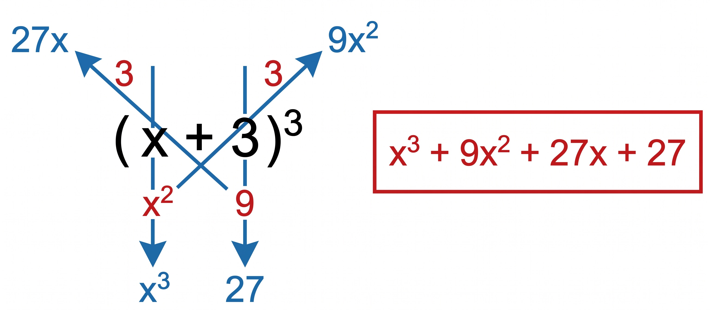
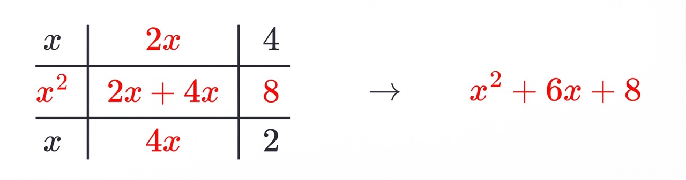
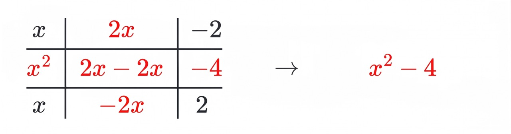

- Binomio al cuadrado
-
Un binomio de la forma (a + b)² se puede desarrollar fácilmente como el cuadrado del primero más el doble del primer término por el segundo más el segundo término al cuadrado.
Ejemplo:
Desarrollar (x+4)²- Se saca el cuadrado del primero: x²
- Se saca el doble del primero por el segundo: 2(x)(4) = 8x
- Se saca el cuadrado del segundo: 16
- El resultado es la suma: x² + 8x + 16

- Binomio al cubo
-
Un binomio de la forma (a + b)³ se puede desarrollar fácilmente como la suma del primer término al cubo más el triple del primer término por el segundo término al cuadrado, más el triple del primer término al cuadrado multiplicado por el segundo más el tercer término al cubo.
Ejemplo:
Desarrollar (x+3)³- Se saca el cubo del primero: x³
- Se saca el triple del primer término al cuadrado por el segundo: 3(x)²(3) = 9x²
- Se saca el triple del primer término por el cuadrado del segundo: 3(x)(3)² = 27x
- Se saca el cubo del segundo término: 27
- El resultado es la suma: x³ + 9x² + 27x + 27

- Binomios con término común
-
El producto de dos binomios con un término en común es igual al término común al cuadrado más la suma de los términos no comunes por el común, más el producto de los términos no comunes.
Ejemplo:
Desarrollar (x+2)(x+4)- Se saca el cuadrado del término común: x²
- Se suman los términos no comunes: 2 + 4 = 6
- Se multiplica esta suma por el término común: (6)(x) = 6x
- Se multiplican los términos no comunes: (2)(4) = 8
- El resultado es la suma: x² + 6x + 8

- Binomios conjugados
-
El producto de dos binomios conjugados es una diferencia de cuadrados, o sea, el cuadrado del primer término menos el cuadrado del segundo término.
Ejemplo:
Desarrollar (x+2)(x-2)- Se saca el cuadrado del primer término: x²
- Se saca el cuadrado del segundo término: 2² = 4
- El resultado es la diferencia: x² - 4

- Álgebra: Manipulación de símbolos y ecuaciones.
- Geometría: Estudio de las propiedades de figuras y espacios.
- Cálculo: Análisis del cambio y del movimiento.
- Estadística: Análisis y tratamiento de datos.
| Tema | Fórmula |
|---|---|
| Área del triángulo | Base por altura dividido entre 2 |
| Teorema de Pitágoras | a elevado al cuadrado más b elevado al cuadrado igual a c elevado al cuadrado |
| Perímetro del círculo | 2 por Pi por radio |
| Suma de cubos | a³ + b³ = (a + b)(a²− ab + b²) |
Click en cualquier celda para cambiar su color
- Comprender el problema planteado.
- Trazar un plan o seleccionar la fórmula.
- Ejecutar las operaciones requeridas.
- Revisar y verificar la solución.
-
Factor Común
Ejemplo: 2x + 4 = 2(x + 2)
-
Factor Común por Agrupación de Términos
Ejemplo: ax + bx + ay + by = x(a + b) + y(a + b) = (a + b)(x + y)
-
Diferencia de Cuadrados
Ejemplo: x² - 9 = (x + 3)(x - 3)
-
Trinomio Cuadrado Perfecto (TCP)
Ejemplo: x² + 6x + 9 = (x + 3)²
-
Trinomio de la Forma x² + bx + c
Ejemplo: x² + 5x + 6 = (x + 3)(x + 2)
-
Trinomio de la Forma ax² + bx + c
Ejemplo: 2x² + 7x + 3 = (2x + 1)(x + 3)
-
Suma de Cubos
Ejemplo: x³ + 8 = (x + 2)(x² - 2x + 4)
-
Diferencia de Cubos
Ejemplo: x³ - 27 = (x - 3)(x² + 3x + 9)